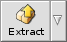
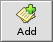

© 2011 Ramshankar
| Archive Window |
The major components of the archive window are:
- TreeView
- Context menu
- LogView
- Toolbar
- Infobar
- Menubar (<System>, File, Edit, Actions, Settings, <archiver>, Windows)
Inorder to work with archives you must be familiar with the archive window:
Beezer reserves an archive window for every archive you open. The archive window is written in such a way that it always remains as responsive as possible rather than locking up during long operations.
TreeViewLogView Toolbar
The logview (also called Action Log) is a textual information area that updates you with relevant information regarding a process and its result. It's like a status bar with a history. The logview may also come in handy when you want to see whether or not you have performed an action before. It's a simple log that is not saved to the harddisk. Hence, once you close the archive the logview's information is lost.
Right-clicking the logview invokes a menu that allows you to retain its contents or clear the logview's data.
The logview can be hidden using Settings –> Action Log command. You can resize the logview by clicking and dragging the dotted-space between the logview and the Treeview. This space is referred to as "dragger". You can change the logview's position (orientation) by right-clicking the dragger - i.e. from vertical to a horizontal position and vice versa.
Infobar
The toolbar is a set of buttons that contains the most frequently used commands for easy access. The toolbar can be hidden by right-clicking space not occupied by a toolbar button (an empty space) or the space at the far end of the toolbar. You can also hide the toolbar from Settings –> Toolbar. Each of the toolbar buttons are described.
Allows you to create a new archive.
Allows you to open an existing archive. Clicking on the context portion, invokes a popup menu allowing you to open a recently opened archive.
Closes the archive. If it's the last archive to be closed either the Welcome window will be shown or Beezer will quit - depending on the settings in Preferences.
Brings up the Search window from where you can search the Treeview.
 Extracts the archive to default extract location (if any). Click here for more info.
Opens the selected file using the application that is associated with the file. Click here for more info.
 Allows you to add files and folders to an archive. This button may be disabled for certain types of archives. Click here for more info.
Allows you to delete the selected entries from an archive. Click here for more info.
Menubar
The Infobar displays information regarding the selected entries (files & folders). You can show/hide the Infobar by right-clicking on it. You can also show/hide it from Settings –> Infobar.
The first 'slot' in the Infobar, displays the number of selected entries as against the total entries in the archive. For example, "6/229" indicates that 6 entries are selected from a total of 229 entries in the archive.
The next portion of the Infobar, displays the total size of the selected entries as against the total size of the archive (in bytes). It also shows how much percent of the archive size is selected.
The thing to remember is that, the display does NOT go deep into folders. As you must be aware by now, selecting a collapsed (folded) folder in the archive does NOT select the entries inside the selected folder. The Infobar thus shows only what is selected.
The menubars are like in any other BeOS application. The menus are explained below
< System >
- Help: Opens this manual
- About Beezer: Displays copyright and credits
- Developer Info: Displays information about me :)
- Quit: Closes all open windows & quits Beezer
File
- New: Allows you to create new archives. See Creating archives for more info
- Open: Open an existing archive (sub-menu contains recent archives)
- Close: Close the current window
- Delete: Allows you to delete the archive. See Deleting archives for more info
- Archive Info: Shows archive info. See Archive info for more info
- Password: If the archive type supports a password, this is where you set it
Edit
- Copy: Either copy the selected archive entries or selected log-view text to the clipboard
- Select All: Selects all visible entries in the archive, sub-menu does as it says :)
- Deselect All: Deselects any selected entry from the treeview
- Invert Selection: Selects what is not selected and vice versa in one operation
- Expand All: Unfolds (expands) all folder entries
- Expand Selected: Unfolds (expands) all the folder entries in the selection
- Collapse All: Folds (collapses) all folder entries
- Collapse Selected: Folds (collapses) all the folder entries in the selection
- Preferences: Opens up Beezer's preferences
Actions
- Extract: See Extracting archives for more info
- Extract To: See Extracting archives for more info
- Extract Selected: See Extracting archives for more info
- View File: See Viewing files for more info
- Open With: See Viewing files for more info
- Test: See Testing archives for more info
- Search Archive: See Searching archives for more info
- Comment: See Comments for more info
- Delete: See Deleting files for more info
- Create Folder:See Creating folders for more info
- Add: See Adding files for more info
Tools
- File Splitter: See File Splitter for more info
- File Joiner: See File Joiner for more info
Settings
- Save as Defaults: Saves the current interface settings as the default settings, so that next time an archive (without interface settings) is opened, these settings would be used
- Save to Archive: Saves the current interface settings to the archive. The next time the archive is opened (and if permitted by Preferences) the settings will be restored. Please note that these settings tend to increase the size of the archive by a few bytes. Also they work only on BFS volumes as attributes are used.
- Toolbar: Hide/Show the toolbar
- Infobar: Hide/Show the infobar
- Action Log: Hide/Show the action log
- Columns: Hide/Show columns in the treeview
- While Opening: Allows you to set the level of folded (collapsed) folders while loading the archive. The more folded, the faster the archive loads but for working with archives you may need to expand them once loading is done. Generally if you only extract archives, you can keep the folding level to 1 or all folded.
< archiver >
The archiver menu is a dynamically created menu. It contains the settings used by the archive format. For example, zip add-on creates a "zip" settings menu having options specific to the zip format. Thus, the archiver menu varies in it's options for each archive format. Some archive formats may not even have such a menu.For other options, refer the "Miscellaneous Info" sections for help on the appropriate add-on's options.
- Save as Defaults: Saves the current archiver settings as defaults. The next time an archive of this type is opened, these settings would be used
- Save to Archive: Saves the current archiver settings to the archive. The next time the archive is opened (and if permitted by Preferences) the settings will be restored. Please note that these settings tend to increase the size of the archive by a few KB. Also they work only on BFS volumes as attributes are used.
Windows
Gives you a list of archives that are currently open. The first 10 archives have shortcut keys. Such as COMMAND + N, where "n" is from 0 to 9. You can quickly switch between archives using these shortcuts. Selecting one of them activates it. The currently active window is indicated by a mark.
| Creating Archives | Extracting Archives |